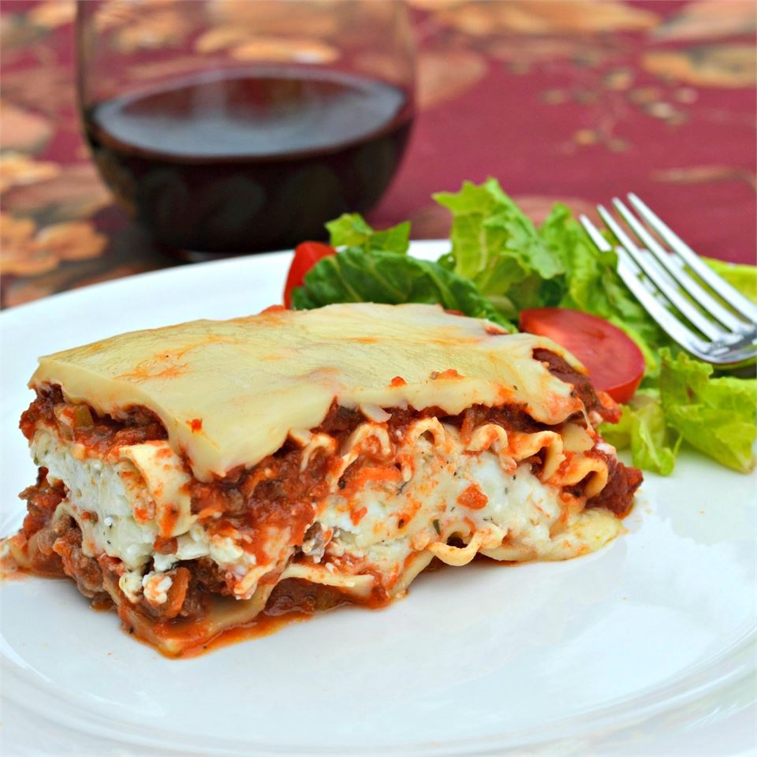

Hearty Lasagna

Description
This is a paragraph that describes the delectable Hearty Lasagna
that is about to enter thine mouth and bless it, upon following this recipe.
This is another paragraph about lasagna. Never underestimate the power
of lasagna in thine mouth.
Ingredients
- 12 whole wheat lasagna noodles
- 1 pound lean ground beef
- 1 teaspoon dried oregano, or to taste
- 1/2 teaspoon garlic powder
- salt and ground black pepper to taste
- 1(16 ounce)package cottage cheese
- 1/2 cup shredded parmesan cheese
- 2 eggs
- 4 1/2 cups tomato-basil pasta
- 2 cups shredded mozzarella cheese
Steps
- Preheat the oven to 350 degrees F (175 degrees C).
- Bring a large pot of lightly salted water to a boil. Add lasagna noodles and cook
for 10 minutes or until al dente; drain.
- Meanwhile, place ground beef, garlic, oregano, garlic powder
, salt, and black pepper in a large skillet over medium heat;
cook and stir until beef is crumbly and evenly browned,
about 10 minutes.
- Mix cottage cheese, Parmesan cheese, and eggs
together in a large bowl until thoroughly combined.
- Lay 4 noodles side by side on the bottom of a 9x13-inch baking pan; top with a layer of
prepared tomato-basil sauce, a layer of ground beef mixture, and a layer of cottage cheese mixture.
Repeat layers twice more, ending with a layer of sauce; sprinkle
mozzarella cheese on top. Cover the dish with aluminum foil.
-
Bake in the preheated oven until the lasagna is bubbling and the cheese has melted, about 30 minutes.
Remove foil and bake until cheese has begun to brown, about 10 more minutes.
Allow to stand at least 10 minutes before serving.